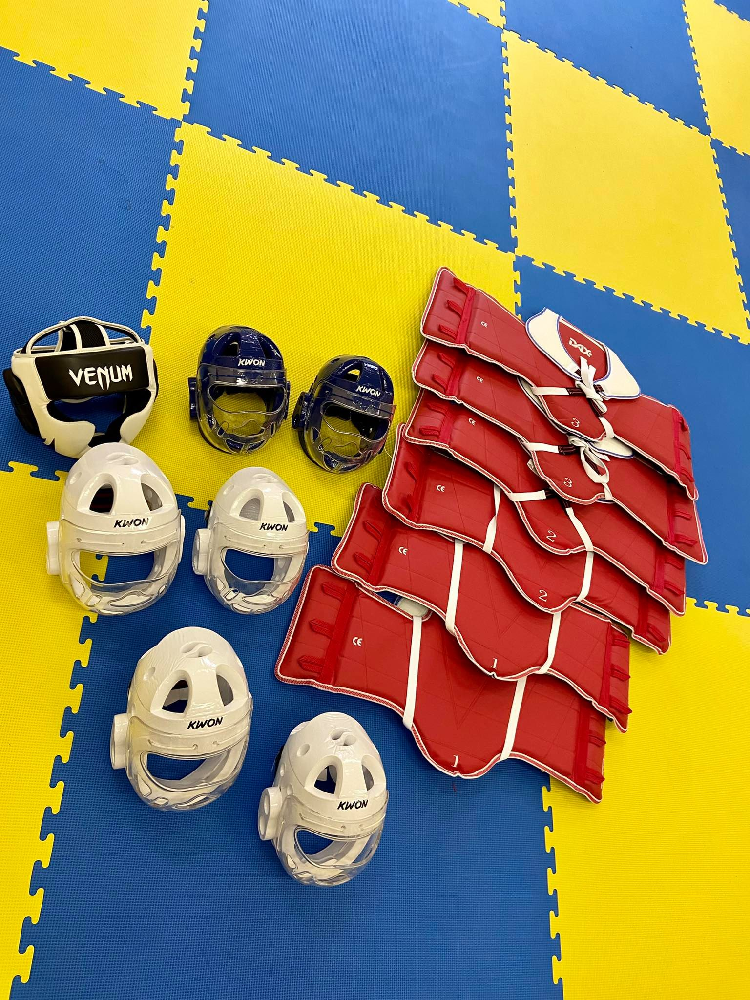

Taekwondo to koreańska sztuka walki, która w porównaniu do innych sztuk jest stosunkowo młoda, gdyż powstawała w XX wieku.
Jest jedną z najpopularniejszych, jak nie najpopularniejszą sztuką walki na świecie.
Uznawana jest za przyjaźniejszą od Karate Kyokushin ze względu na liczbę ochraniaczy, którą
Taekwondocy noszą wiele ochraniaczy, dzięki czemu została uznana za bardziej przystępną dla młodych adeptów.
Na zdjęciu widać podstawowe zabezpieczenia w Taekwondo, kamizelki zwane są "Hogo", po jednej stronie są czerwone, po drugiej niebieskie, kaski są specjalnie przeznaczone dla dzieci, posiadają dodatkową ochronę w postaci przyłbicy
